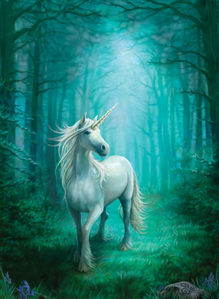

A lovak

A ló páratlanujjú patás állat. Izomzata fejlett, erõs.
A lónak testéhez képest kis gyomra van, ezért figyelni kell etetésére. Túletetés esetén különbözõ halálos szövődményû betegségek alakulhatnak ki. Különösen veszélyesek számára a mérgezõ növények: szarkaláb, fehér akác. Az emésztõrendszere összekapcsolódik a légzõrendszerrel, ennek következtében a ló nem tud hányni.
A ló háta és fara
A ló hátát alapvetõen a test többi részéhez viszonyított hossza alapján jellemezzük. Az ideális háthossz általában a hasznosítás függvénye: a lovassportokban leginkább a közepesen hosszú hát, a hidegvérû fajtáknál a rövid hát az ideális. A ló "farmotoros jármû": erejét, sebességét és teljesítményét nagyban befolyásolja a far alakja és izmoltsága.
Színek
A ló szõrének színe attól függ, hogy bõre mennyi pigmentet, vagyis természetes festékanyagot tartalmaz.
Alapszínek:
- fekete
- pej
- simapej: testén a szõrzet a barna különbözõ árnyalata, a sörény, a farok és a lábvégek feketék.
- világospej: szõre világosbarna, sárgás árnyalatú.
- sötétpej: szõre egész sötétbarna, a has alján világosabb árnyalatú.
- gesztenyepej: vöröses árnyalatú barna szõrzet, a hosszú szõrök és a lábvégek feketék.
- sárga
- fakó
Kevert színek:
- deres
- szürke
- tarka
- fehér
- albínó
A ló méretei
A ló méreteit sokféleképpen megadhatjuk.
A leggyakrabban használt méret a marmagasság. A mar (az állat hátán a lapocka fölött kidomborodó rész)
magasságának lemérésével adhatjuk meg legmegfelelõbben a ló tényleges magasságát, hiszen a marmagasság a
lehajtott és felemelt fejû lónál is ugyanakkora, míg az ennél magasabban található testrészek (fej, nyak)
helyzete szinte folyamatosan változik.
Tömeg
Egy átlagos hátasló tömege 4-500 kilogramm. Az igavonásra használt társaik ennél lényegesen nehezebbek, a shire például elérheti az egy tonnát is. A pónik tömege egy mázsa (100 kg) körül mozog.
Viselkedés
A lovak minden esetben csoportban élnek, mivel a magányosságtól félnek. A lovak nagyobb csoportját ménesnek nevezzük. A lovak egymás közötti viszonya meghatározott. Minden lónak megvan a maga hierarchikus helye a ménesben, amely meghatározza viselkedését. Általában a lovaknál is van fõnök, ami rendszerint egy idõsebb kanca. Ha valamelyik másik ló is vezér szeretne lenni, akkor harccal döntik el ki lehessen az. A lovak szeretik, ha kényeztetik õket, de képesek túlzásba vinni az evést, ami nagy veszélyt jelent az egészségükre.
A ló hasznosítása
Földmûvelési munkára, igahúzásra általában ma már nem használják. Fõként a hobbi és a sport szerelmesei tartják õket. Másrészt a húsát és tejét hasznosítják. A lovas nomád népek a ló tejébõl a magas cukortartalomnak köszönhetõen a mai napig alkoholos erjesztett italt, kumiszt készítenek.

Piller Ferenc Tamás